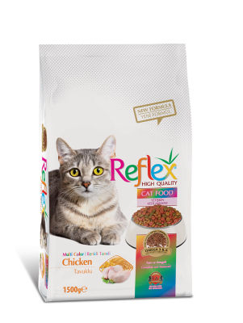

REFLEX YETİŞKİN KEDİ MAMASI RENKLİ 1,5 KG
İÇİNDEKİLER:İşlenmiş Hayvansal Protein, Buğday, Mısır,Buğday Kepeği, Bonkalit, Hayvansal Yağ, Mısır Gluteni, Kurutulmuş Şeker Pancarı, Ciğer Aroması, Tuz, Keten Tohumu, Kuru Bira Mayası, Taurin, Mos (Mannan-Oligosaccarid),Beta-Glucan, Yucca, Quillaja, Renklendiriciler (E 110, E 104, E 102, E 133, E 124, E171).
VİTAMİNLER:Kalsiyum, Fosfor, Sodyum, İyot, Çinko, Bakır, Potasyum Klorür, Demir, Selenyum.
MİNERALLER:Vit. A, Vit. D, Vit. E, Vit. C, Vit. B1 - B2- B3(niasin) - B6- B12 - B7 (biotin) - B9 (folik Asit), Vit. K, Kolin, Kalsiyum Pantotetan.
AĞIRLIK1 - 2 Kg 2 - 3 Kg 3 - 4 Kg 4 - 5 Kg 5 - 6 Kg 6 - 7 Kg 7 - 8 Kg
PORSİYON25 - 35 G 35 - 55 G 55 - 75 G 75 - 90 G 90 - 110 G 110 - 130 G 130 - 145 G
- Ham protein %32
- Ham yağ %14
- Ham selüloZ %3
- Ham kül %8
- A Vitamini (E-672) 18000 IU/Kg
- D3 Vitamini (E-671) 1500 IU/Kg
- E Vitamini (3a700) 200 Mg
- C Vitamini (Stay C) 200 Mg
- Taurin 1500 Mg
- ANALİTİK BİLEŞENLER
- BESLEYİCİ İLAVELER